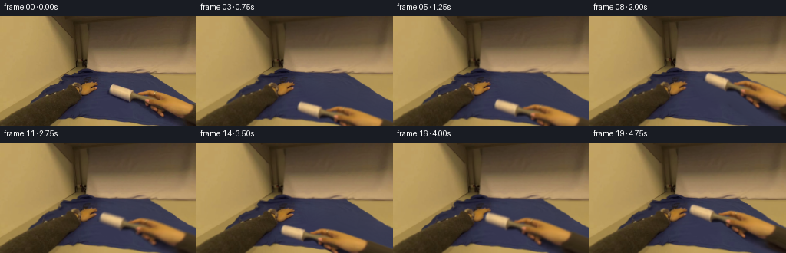
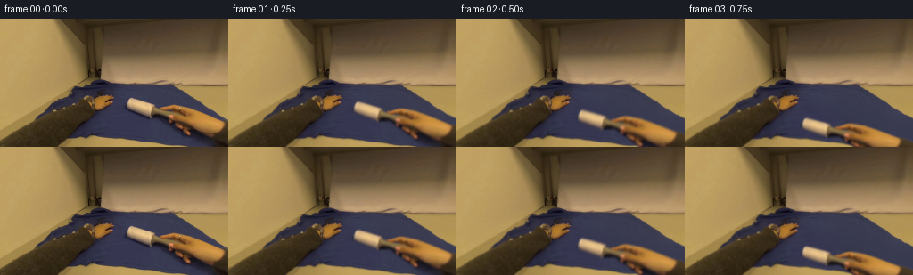

CODING AGENTS AS PIXEL WORLD MODELS
traex/GPT-6.1-Sol · common50_0015
点击播放 · 原生 RGB 像素
逐轮保存的候选
回放视频、检查图与代码变化。
每份候选均可单独播放。实际图片检查记录在下方工具轨迹中。
候选 01播放与检查图
点击播放 · 原生 RGB 像素


展开代码变化
--- 上一保存版本
+++ 本次保存版本
@@ -0,0 +1,112 @@
+from pathlib import Path
+import numpy as np
+import cv2
+from PIL import Image, ImageDraw
+from scipy.ndimage import gaussian_filter, distance_transform_edt
+import artifact_io
+
+CASE=Path(__file__).resolve().parent
+H,W=144,256
+original=np.asarray(Image.open(CASE/'first_frame.png').convert('RGB'))
+source=original.astype(np.float32)
+# Contour measured from colour changes in the reference RGB. Includes the
+# grey handle, the whole grip, and its contact shading.
+head=[(146,88),(150,89),(158,91),(168,94),(175,97),(176,99),(184,100),
+ (190,97),(199,96),(209,98),(219,102),(231,107),(242,111),
+ (251,115),(256,116),(256,144),(224,144),(217,137),(210,133),
+ (209,130),(204,127),(200,124),(196,121),(192,118),(188,116),
+ (186,113),(182,111),(172,112),(168,111),(161,108),(151,104),
+ (144,101),(140,98),(140,93),(142,90)]
+scale=4
+m=Image.new('L',(W*scale,H*scale));ImageDraw.Draw(m).polygon([(x*scale,y*scale) for x,y in head],fill=255)
+mask=np.asarray(m.resize((W,H),Image.Resampling.LANCZOS)).astype(np.float32)/255
+mask=np.clip(mask,0,1)
+# Soft outer shading is part of the foreground. Preserve its texture but
+# remove the fixed original shadow from the revealed shirt.
+mask=gaussian_filter(mask,0.35)
+remove=cv2.dilate((mask>0.025).astype(np.uint8),np.ones((7,7),np.uint8)).astype(bool)
+yy,xx=np.mgrid[:H,:W]
+# All foreground pixels lie on the navy-blue main panel. Cloth colours at
+# neighboring unaffected locations give the illumination for uncovered cloth.
+cloth=(source[:,:,2]>source[:,:,0]+14)&(source[:,:,2]>source[:,:,1]+13)
+known=cloth & ~remove
+# Smooth RGB field guided by genuine unoccluded fabric rather than warm
+# hand/table pixels. A harmonic extension keeps the repaired area continuous.
+field=np.empty_like(source)
+field[:]=np.array([55.8,57.8,80.5])
+field[known]=source[known]
+for it in range(550):
+ av=(np.roll(field,1,0)+np.roll(field,-1,0)+np.roll(field,1,1)+np.roll(field,-1,1))*0.25
+ field[~known]=av[~known]
+ field[0]=field[1];field[-1]=field[-2];field[:,0]=field[:,1];field[:,-1]=field[:,-2]
+# Fine fabric grain sampled only from the initial image.
+noise=source[:,:,2]-gaussian_filter(source[:,:,2],1.2)
+noise=np.clip(np.roll(noise,39,axis=1),-1.6,1.6)
+field+=noise[:,:,None]*0.40
+repair=gaussian_filter(remove.astype(np.float32),0.65)
+background=source*(1-repair[:,:,None])+field*repair[:,:,None]
+# Extend the forearm along its actual direction out of frame, so an upward
+# stroke does not expose a rectangular crop of the human arm.
+PH,PW=225,390
+Y,X=np.mgrid[:PH,:PW].astype(np.float32)
+out=np.maximum(np.maximum(X-255,(Y-143)/0.43),0)
+sx=np.clip(X-out,0,255);sy=np.clip(Y-0.43*out,0,143)
+texture=cv2.remap(source,sx,sy,cv2.INTER_LINEAR,borderMode=cv2.BORDER_REPLICATE)
+alpha=cv2.remap(mask,sx,sy,cv2.INTER_LINEAR,borderMode=cv2.BORDER_REPLICATE)
+# Extension is confined to the continuation of the real right forearm.
+alpha[(X>255)&(sy<113.5)]=0
+alpha[(Y>143)&(sx<215)]=0
+alpha=gaussian_filter(alpha,0.18)
+premul=texture*alpha[:,:,None]
+
+# Four smooth, overlapping rolling passes; travel is approximately normal to
+# the roller axis. Endpoint easing models wrist deceleration at each reversal.
+keys=np.array([0.,3.9,8.5,13.4,18.2,19.])
+poses=np.array([[0,0,0],[-13,25,2.5],[9,-15,-2.5],[-32,19,4.0],[-14,-11,-1.0],[-12,-7,0.]])
+def pose(t):
+ i=min(np.searchsorted(keys,t,side='right')-1,len(keys)-2);i=max(0,i)
+ u=np.clip((t-keys[i])/(keys[i+1]-keys[i]),0,1)
+ e=0.5-0.5*np.cos(np.pi*u)
+ p=poses[i]*(1-e)+poses[i+1]*e
+ # Natural small wrist motion; zero at time zero.
+ p[:2]+=np.array([0.42*np.sin(t*0.73),0.30*np.sin(t*0.86)])
+ return p
+
+def render(t):
+ dx,dy,ang=pose(t)
+ # Very mild foreshortening variation as pressure shifts to the cylinder.
+ s=1-0.009*np.sin(np.pi*t/9)**2
+ mat=cv2.getRotationMatrix2D((158,98),ang,s)
+ mat[:,2]+=[dx,dy]
+ a=cv2.warpAffine(alpha,mat,(W,H),flags=cv2.INTER_LINEAR,borderMode=cv2.BORDER_CONSTANT)
+ p=cv2.warpAffine(premul,mat,(W,H),flags=cv2.INTER_LINEAR,borderMode=cv2.BORDER_CONSTANT)
+ bg=background.copy()
+ # Local compressive fabric response: wrinkles drift by subpixels in the
+ # immediate contact zone, with no global distortion of the tabletop.
+ cx,cy=158+dx,98+dy
+ local=np.exp(-((xx-cx)/26)**2-((yy-cy-5)/12)**2)
+ u=(0.42*np.sin(t*0.64))*local
+ v=(0.36*np.sin(t*0.52))*local
+ bg=cv2.remap(bg,(xx+u).astype(np.float32),(yy+v).astype(np.float32),cv2.INTER_LINEAR,borderMode=cv2.BORDER_REFLECT_101)
+ # Original contact shadow already moves with the pixels. Add only a faint,
+ # wide occlusion skirt directly beneath the moving head.
+ contact=np.exp(-((xx-cx)/20)**2-((yy-cy-4)/4)**2)
+ bg*=1-0.035*contact[:,:,None]*np.clip(t,0,1)
+ f=bg*(1-a[:,:,None])+p
+ # First-person steadiness with slight head movement while reaching.
+ zoom=1+0.022*(1-np.exp(-t/6))
+ camera=cv2.getRotationMatrix2D((154,109),0.15*np.sin(t*0.39),zoom)
+ camera[:,2]+=[0.36*np.sin(t*.50),0.28*np.sin(t*.57)]
+ return cv2.warpAffine(f,camera,(W,H),flags=cv2.INTER_LINEAR,borderMode=cv2.BORDER_REFLECT_101)
+
+frames=[original.copy()]
+for k in range(1,20):
+ # A short shutter smooths moving fine edges without blurring the static room.
+ samples=[render(k+d) for d in [-0.10,0,0.10]]
+ f=np.mean(samples,axis=0)
+ frames.append(np.clip(np.rint(f),0,255).astype(np.uint8))
+frames=np.stack(frames)
+Image.fromarray(np.clip(background,0,255).astype(np.uint8)).save(CASE/'background_reconstruction.png')
+Image.fromarray(np.rint(mask*255).astype(np.uint8)).save(CASE/'foreground_alpha.png')
+artifact_io.save(frames,CASE)
+print('Saved',frames.shape,frames.dtype,'first identical:',np.array_equal(frames[0],original))
可观测工具轨迹
实际执行的命令与返回图片。
命令 1exit 0
/bin/bash -lc 'ls -la && cat prompt.txt && cat GENERATION_RULES.md'
命令 2exit 0
/bin/bash -lc "cat task_spec.json; cat artifact_io.py; python - <<'PY'
from PIL import Image
import numpy as np
im=np.array(Image.open('first_frame.png').convert('RGB'));print(im.shape)
# Numeric palette map: color classes in each 4x4 cell
for y in range(0,144,4):
s=''
for x in range(0,256,4):
r,g,b=im[y:y+4,x:x+4].mean((0,1));mx=max(r,g,b);mn=min(r,g,b)
if b>r*1.2 and b>g*1.06:c='B' if b>100 else 'b'
elif r>g*1.15 and r>b*1.22:c='S' if r>100 else 's'
elif mn>205:c='W'
elif mn>150:c='L'
elif mx<45:c='.'
elif mx<85:c='-'
elif mx<140:c='g'
else:c='l'
s+=c
print(f'{y:3} '+s)
PY"命令 3exit 0
/bin/bash -lc "python - <<'PY'
from PIL import Image
import numpy as np
im=Image.open('first_frame.png').convert('RGB');a=np.asarray(im)
print('range',a.min((0,1)),a.max((0,1)))
q=im.resize((128,72)).quantize(colors=16); p=np.asarray(q.getpalette()).reshape(-1,3)[:16]
cs='0123456789ABCDEF';print('\\n'.join(f'{cs[i]} {v}' for i,v in enumerate(p)))
for y,row in enumerate(np.array(q)):print(f'{y*2:03} '+''.join(cs[z] for z in row))
print('brightest',[(tuple(z),tuple(a[tuple(z)])) for z in np.argwhere(a.mean(2)>180)[::20]])
PY"命令 4exit 0
/bin/bash -lc "python - <<'PY'
from PIL import Image
import numpy as np
a=np.array(Image.open('first_frame.png')).astype(float)
# foreground detail 1:1 x120-251 y82-143 palette ratios
for y in range(82,144):
s=''
for x in range(120,252):
r,g,b=a[y,x];
if b>r*1.03 and b>g*1.1: c='B' if b>48 else 'b'
elif r>205 and g>170:c='W'
elif r>170 and g>130 and b>100:c='w'
elif r>170:c='t'
elif r>140:c='h'
elif r>110:c='o'
elif r>85:c='s'
elif r>65:c=':'
elif r>45:c='-'
else:c='.'
s+=c
print(f'{y:3} '+s)
PY"命令 5exit 0
/bin/bash -lc "python - <<'PY'
from PIL import Image
import numpy as np
a=np.array(Image.open('first_frame.png'))
for y in [85,90,95,100,105,110,115,120,125,130,135,140,143]:
print('y',y,' '.join(f'{x}:{tuple(a[y,x])}' for x in range(140,256,5)))
# edges object grayscale crop
v=a.astype(float)
for y in range(88,144,2):
print('%3d'%y+' '+''.join(' .:-=+*#%@'[min(9,int(v[y:y+2,x:x+2].mean()/23))] for x in range(138,256,2)))
PY"命令 6exit 0
/bin/bash -lc "python - <<'PY'
import importlib.util
for x in ['scipy','cv2']:print(x, bool(importlib.util.find_spec(x)))
from PIL import Image
import numpy as np
a=np.array(Image.open('first_frame.png'))
# ratio detail of outer edge silhouette for group
for y in range(95,144):
print(f'{y:3} '+''.join('X' if (int(a[y,x,0])>int(a[y,x,2])+20) else '.' for x in range(165,256)))
PY"命令 7exit 0
/bin/bash -lc "python - <<'PY'
from PIL import Image
import numpy as np
v=np.array(Image.open('first_frame.png')).astype(int)
for y in range(85,144):
# run spans r-b>15, and excluding far wood by upper constraint
r=v[y,:,0]-v[y,:,2]>15
spans=[];s=None
for x in range(137,256):
if r[x] and s is None:s=x
if (not r[x] or x==255) and s is not None:
e=x if r[x] else x-1
if e-s>1:spans.append((s,e))
s=None
print(y,spans)
PY"命令 8exit 0
/bin/bash -lc "python - <<'PY'
import numpy as np
from PIL import Image
v=np.array(Image.open('first_frame.png')).astype(int)
# numerical classified crop, detail lower hand mask
for y in range(96,138):
print(f'{y} '+''.join('H' if v[y,x,0]-v[y,x,2]>15 else 'b' if v[y,x,2]>v[y,x,0]+12 else 'd' for x in range(171,256)))
PY"命令 9exit 0
/bin/bash -lc "cat > generate.py <<'PY'
from pathlib import Path
import numpy as np
import cv2
from PIL import Image, ImageDraw
from scipy.ndimage import gaussian_filter, distance_transform_edt
import artifact_io
CASE=Path(__file__).resolve().parent
H,W=144,256
original=np.asarray(Image.open(CASE/'first_frame.png').convert('RGB'))
source=original.astype(np.float32)
# Contour measured from colour changes in the reference RGB. Includes the
# grey handle, the whole grip, and its contact shading.
head=[(146,88),(150,89),(158,91),(168,94),(175,97),(176,99),(184,100),
(190,97),(199,96),(209,98),(219,102),(231,107),(242,111),
(251,115),(256,116),(256,144),(224,144),(217,137),(210,133),
(209,130),(204,127),(200,124),(196,121),(192,118),(188,116),
(186,113),(182,111),(172,112),(168,111),(161,108),(151,104),
(144,101),(140,98),(140,93),(142,90)]
scale=4
m=Image.new('L',(W*scale,H*scale));ImageDraw.Draw(m).polygon([(x*scale,y*scale) for x,y in head],fill=255)
mask=np.asarray(m.resize((W,H),Image.Resampling.LANCZOS)).astype(np.float32)/255
mask=np.clip(mask,0,1)
# Soft outer shading is part of the foreground. Preserve its texture but
# remove the fixed original shadow from the revealed shirt.
mask=gaussian_filter(mask,0.35)
remove=cv2.dilate((mask>0.025).astype(np.uint8),np.ones((7,7),np.uint8)).astype(bool)
yy,xx=np.mgrid[:H,:W]
# All foreground pixels lie on the navy-blue main panel. Cloth colours at
# neighboring unaffected locations give the illumination for uncovered cloth.
cloth=(source[:,:,2]>source[:,:,0]+14)&(source[:,:,2]>source[:,:,1]+13)
known=cloth & ~remove
# Smooth RGB field guided by genuine unoccluded fabric rather than warm
# hand/table pixels. A harmonic extension keeps the repaired area continuous.
field=np.empty_like(source)
field[:]=np.array([55.8,57.8,80.5])
field[known]=source[known]
for it in range(550):
av=(np.roll(field,1,0)+np.roll(field,-1,0)+np.roll(field,1,1)+np.roll(field,-1,1))*0.25
field[~known]=av[~known]
field[0]=field[1];field[-1]=field[-2];field[:,0]=field[:,1];field[:,-1]=field[:,-2]
# Fine fabric grain sampled only from the initial image.
noise=source[:,:,2]-gaussian_filter(source[:,:,2],1.2)
noise=np.clip(np.roll(noise,39,axis=1),-1.6,1.6)
field+=noise[:,:,None]*0.40
repair=gaussian_filter(remove.astype(np.float32),0.65)
background=source*(1-repair[:,:,None])+field*repair[:,:,None]
# Extend the forearm along its actual direction out of frame, so an upward
# stroke does not expose a rectangular crop of the human arm.
PH,PW=225,390
Y,X=np.mgrid[:PH,:PW].astype(np.float32)
out=np.maximum(np.maximum(X-255,(Y-143)/0.43),0)
sx=np.clip(X-out,0,255);sy=np.clip(Y-0.43*out,0,143)
texture=cv2.remap(source,sx,sy,cv2.INTER_LINEAR,borderMode=cv2.BORDER_REPLICATE)
alpha=cv2.remap(mask,sx,sy,cv2.INTER_LINEAR,borderMode=cv2.BORDER_REPLICATE)
# Extension is confined to the continuation of the real right forearm.
alpha[(X>255)&(sy<113.5)]=0
alpha[(Y>143)&(sx<215)]=0
alpha=gaussian_filter(alpha,0.18)
premul=texture*alpha[:,:,None]
# Four smooth, overlapping rolling passes; travel is approximately normal to
# the roller axis. Endpoint easing models wrist deceleration at each reversal.
keys=np.array([0.,3.9,8.5,13.4,18.2,19.])
poses=np.array([[0,0,0],[-13,25,2.5],[9,-15,-2.5],[-32,19,4.0],[-14,-11,-1.0],[-12,-7,0.]])
def pose(t):
i=min(np.searchsorted(keys,t,side='right')-1,len(keys)-2);i=max(0,i)
u=np.clip((t-keys[i])/(keys[i+1]-keys[i]),0,1)
e=0.5-0.5*np.cos(np.pi*u)
p=poses[i]*(1-e)+poses[i+1]*e
# Natural small wrist motion; zero at time zero.
p[:2]+=np.array([0.42*np.sin(t*0.73),0.30*np.sin(t*0.86)])
return p
def render(t):
dx,dy,ang=pose(t)
# Very mild foreshortening variation as pressure shifts to the cylinder.
s=1-0.009*np.sin(np.pi*t/9)**2
mat=cv2.getRotationMatrix2D((158,98),ang,s)
mat[:,2]+=[dx,dy]
a=cv2.warpAffine(alpha,mat,(W,H),flags=cv2.INTER_LINEAR,borderMode=cv2.BORDER_CONSTANT)
p=cv2.warpAffine(premul,mat,(W,H),flags=cv2.INTER_LINEAR,borderMode=cv2.BORDER_CONSTANT)
bg=background.copy()
# Local compressive fabric response: wrinkles drift by subpixels in the
# immediate contact zone, with no global distortion of the tabletop.
cx,cy=158+dx,98+dy
local=np.exp(-((xx-cx)/26)**2-((yy-cy-5)/12)**2)
u=(0.42*np.sin(t*0.64))*local
v=(0.36*np.sin(t*0.52))*local
bg=cv2.remap(bg,(xx+u).astype(np.float32),(yy+v).astype(np.float32),cv2.INTER_LINEAR,borderMode=cv2.BORDER_REFLECT_101)
# Original contact shadow already moves with the pixels. Add only a faint,
# wide occlusion skirt directly beneath the moving head.
contact=np.exp(-((xx-cx)/20)**2-((yy-cy-4)/4)**2)
bg*=1-0.035*contact[:,:,None]*np.clip(t,0,1)
f=bg*(1-a[:,:,None])+p
# First-person steadiness with slight head movement while reaching.
zoom=1+0.022*(1-np.exp(-t/6))
camera=cv2.getRotationMatrix2D((154,109),0.15*np.sin(t*0.39),zoom)
camera[:,2]+=[0.36*np.sin(t*.50),0.28*np.sin(t*.57)]
return cv2.warpAffine(f,camera,(W,H),flags=cv2.INTER_LINEAR,borderMode=cv2.BORDER_REFLECT_101)
frames=[original.copy()]
for k in range(1,20):
# A short shutter smooths moving fine edges without blurring the static room.
samples=[render(k+d) for d in [-0.10,0,0.10]]
f=np.mean(samples,axis=0)
frames.append(np.clip(np.rint(f),0,255).astype(np.uint8))
frames=np.stack(frames)
Image.fromarray(np.clip(background,0,255).astype(np.uint8)).save(CASE/'background_reconstruction.png')
Image.fromarray(np.rint(mask*255).astype(np.uint8)).save(CASE/'foreground_alpha.png')
artifact_io.save(frames,CASE)
print('Saved',frames.shape,frames.dtype,'first identical:',np.array_equal(frames[0],original))
PY
python generate.py"命令 10exit 0
/bin/bash -lc "python - <<'PY'
import numpy as np
from PIL import Image
import cv2
orig=np.array(Image.open('first_frame.png')).astype(float)
a=np.stack([np.array(Image.open(f'frames/{i:02d}.png')) for i in range(20)])
print('consecutive RGB MAE',np.round(np.mean(np.abs(np.diff(a.astype(float),axis=0)),axis=(1,2,3)),2))
for i in [0,1,4,8,13,18,19]:
f=a[i].astype(float);ys,xs=np.where((f[:,:,0]>205)&(f[:,:,1]>170)&(f[:,:,2]>110))
print(i,'roller highlight', (np.round(xs.mean(),1),np.round(ys.mean(),1)), 'bounds', (xs.min(),ys.min(),xs.max(),ys.max()))
b=np.array(Image.open('background_reconstruction.png'))
for y in [90,100,110,120,130,140]:
print('background',y,[(x,tuple(b[y,x])) for x in [140,150,160,180,200,220,240,255]])
PY"命令 11exit 0
/bin/bash -lc "command -v ffmpeg || true; du -h pixels.npz index.html; python - <<'PY'
import numpy as np
from PIL import Image
x=np.load('pixels.npz')['pixels'];print('packed tensor',x.shape,x.dtype)
f=np.asarray(Image.open('first_frame.png').convert('RGB')).astype(np.uint32)
p=(f[:,:,0]<<16)|(f[:,:,1]<<8)|f[:,:,2]
assert np.array_equal(x[:,:,0],p)
assert len(list(__import__('pathlib').Path('frames').glob('*.png')))==20
print('Contract validation passed.')
PY"保存候选 1 份；完成命令 11 次；可验证图片返回 0 张。原始 API 响应与完整日志保留在本地。